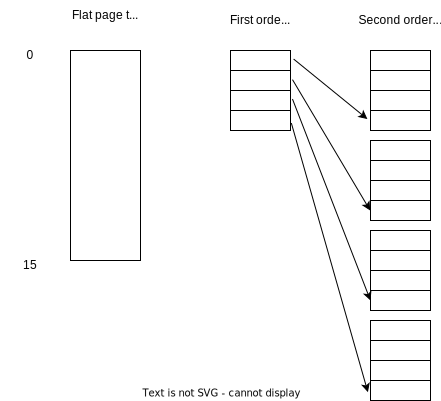

Virtual memory
In this section I will describe what virtual memory is, why it's needed, and how the page tables connect virtual memory to physical memory.
What virtual memory is and why it's needed
So far, we have been working with 32-bit processors (ARMv7 Cortex-A). We have written our code using a 4GB address space, and the program could access all the memory space without a problem. In the linker script, we designated a LMA (Load Memory Address) where the code would be written, an a VMA (Virtual Memory Address), where the code would be executed. Later on, we used the memcopy function to copy the code and data from the ROM into the RAM to execute it.
The physical memory (PM) is defined as the actual amount of RAM memory available for the CPU to execute code and load data. In the Cortex-A, it's usually something like 512KB.
The virtual memory (VM) is defined as the amount of memory seen by a program. A program can be written with any amount of virtual memory in mind. For a 32-bit CPU, applications are usually written with a 4GB VA, so they can access any memory there, but they don't own that memory. For a 64-bit CPU, programs are written with a 2^64 VA space.
The VA will be mapped into a PA by the operating system using pages and frames. So, a program might need more memory than the system actually has (8GB of VA, 16GB of VA), or there might be running multiple processes which, in total, need more than the PA available, but they all run in the computer anyways.
You probably are familiar with the concept of swap memory. The computer may have some fast access RAM and slower access hard drive. If the RAM ever gets full, the lesser used processes are loaded into the hard drive to make room for the ones that need to be executed in the RAM. This is virtual memory, the ability to re-arrange the program memory into the physical memory "by turns".
Constructing Virtual addresses (VA): pagination
Pagination is the process of separating the VA of the code into pages, each of a fixed size, and then allocating them into frames in the PA. The most common approach is to create 4KB pages.
A Virtual Address might look like this:
| Page table index | Page offset |
|---|---|
Where the "page table index" refers to the actual entry in the page table, and the "page offset" is the position in memory inside that page.
An entry in the page table will look like this:
| Frame PA | Memory flags |
|---|---|
Where the "Frame PA" is the MSB of the PA for the conversion from VA to PA, and the size of the memory flags is the same as the page offset's bits.
Flat page table
So, if we have a page of \(4KB = 2^{12}\), and a total virtual memory space of \(4Gb = 2^{32}\), that means that the page offset will be 12 bits long, and the page table index will be 20 bits long (the remaining bits). The total amount of pages needed by this application would be:
And the total space ocuppied by the table will be equal to:
The virtual space memory is independent of the actual usage of that memory. For each program written, they will have a 4GB VA, and will occupy 4MB for their page table, no matter if the actual program uses 1Mb, 1GB or the whole 4GB. The table will be generated with empty spaces.
Example of single level page table
We have a 16-bit (64KB) VA space, and a 20-bit (1MB) PA space. The pages have 14-bit size (16Kb). We have a page table for a program that looks like this:
| 0x1F |
|---|
| 0x3F |
| 0x23 |
| 0x17 |
Given that our program wants to access data with VA 0xF0F0 and 0x001F, where would they be in the PA?
Well, because our page table has only 4 positions, the page table index will be only 2 bits long, leaving 14 bits of page offset:
0xF0F0 = "11|11_0000_1111_0000", so table index is "3" (0x17), the PA forms concatenating the page table entry and the offset:
VA = 0001_0111 && 11_0000_1111_0000; Discarding the two MSB...
VA = 00| 0101_1111_0000_1111_0000 --> VA = 0x5F0F0
0x00FF = 00|00_0000_0001_1111, so table index is "0" (0x1F), the PA forms concatenating the page table entry and the offset:
VA = 00| 0111_1100_0000_0001_1111 = 0x7C01F
Multi-level page tables
If we have a VA of 4GB, and a program that only allocates 9KB of memory, we don't want to generate 1M page entries. We would want to generate only 3, cause this program only would need 3 pages. This can't be done with a flat page table, but can be done with a multi-level one.
If we had a two page table structure, the VA address will look like this:
| First level table index | Second level table index | Page offset |
|---|---|---|
The first table entry will look like this:
| Second table entry PA | Memory flags |
|---|---|
The second table entry will look like this:
| Frame PA | Memory flags |
|---|---|
Example
If we had a 8-bit = 256B VA space, represent the flat page table and the double entry page tables, considering a page size of 16B.
Since the page size is "4" bits, and the virtual address is "8" bits, then there will be 4 bits of page index (16 entries) and 4 bits of page offset:
VA = |0100 (page index)| 1100 (page offset)
If we were to use two levels of tables, we will still need 16 table entries that point to frame PA, but we will also a table that point to that second tables. Here, we can do a "1" bit order table, and 2 "3bit" second order, or do "2" bit first order and "2" bit second order, as shown in the image.
The final result of a second order table is now using 4 more entries per program, so where is the memory optimization?

If a program only uses a few percent of it's total VA (let's say, the 64B in the previous example), then we will only need one of the four second level page tables. Using multi-layer page tables, the amount of space needed for the page tables has a correlation with the space occupied by the program.
The TLB: Table look-aside buffer
Using the page tables, each time a memory address needs to be accessed, the CPU should read from memory the first table, then the second table, obtain the PA, and then access that PA. Reading from memory is very slow, so how can we speed this up?
The TLB is a special cache memory from 16 to 512 associative entries that hold the most recent page table translations (associative means that they are all checked simultaneously). So, to translate from VA to PA, it will go like this:
-
From the VA, check the table index and see if there is an entry match. If so, use the TLB translation.
-
If there was a TLB miss, go check the page tables in memory, and add the translation to the TLB for future use (removing and old one). This is called a "translation table walk".
Memory attributes
There are two main types of memory: The "RAM" memory, which hods all the instructions are variables of the current program, and the "cache", which is a higher speed, smaller memory space. Most values are written to the cache memory to speed up the code execution. However, sometimes the value in memory can be modified while the cache one don't, producing some read or write mismatches (for example, putting on a cache a register).
Normal memory
Accesses can be repeated with no side effects, reading always return the last value written.
The shareability properties are:
- Non-shareable: accessed by a single processor.
- Inner shareable: accessed by multiple processors of the same system.
- Outer shareable: accessed by other systems or peripherals.
The cache properties define how the values are WRITTEN to memory. Reading operations are always done from cache if possible, or from memory otherwise.
-
Non cacheable: values are only written to the memory.
-
Write through cacheable: writing to cache and memory occur "simultaneously", so memory is always coherent.
-
Write back cacheable: the value is only written to the cache. Writing to memory is delayed until the cache gets full and the value needs to be removed from it. The cached value and the memory value might not be the same.
-
Write allocate: save in the cache the address to be written to, if not already in the cache. This is beneficial if multiples operations need to be done on the same address.
-
No write allocate: don't save in the cache the address to be written to.
-
Strongly-ordered memory: An access to the location can cause side effects, or the value returned for a load can vary depending on the number of loads performed (I/O devices, registers). Always shareable.
-
Device memory: same as strongly-ordered, but might not be shareable.
- Shareable
- Not shareable
Glossary
PM: Physical Memory PA: Physical Address VM: Virtual memory VA: Virtual address MMU: Memory Management Unit